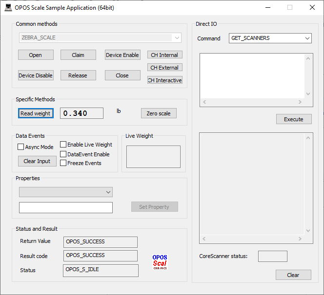

Overview
The Zebra Scale OPOS Driver suite ships with a sample application that demonstrates all the OPOS operations on a connected Zebra scale.
Scale OPOS Sample Application
The Scale OPOS Sample Application allows you to simulate an application communicating with the Zebra Scale OPOS Driver. This utility displays received weight data from the scale through the Zebra Scale OPOS Driver. The Zebra Scanner SDK includes source code for this VC++ test utility.
Scale OPOS Sample Application Window Functionality
Table 1: Scale OPOS Sample Application Button/Field Functionality
| Button / Field / Checkbox | Description | Values | Code Samples |
|---|---|---|---|
| Open | Open Method | ZEBRA_SCALE | OposScale.Open("ZEBRA_SCALE"); |
| Claim | Claim the device with time out value. | -1, Any integer starting from zero | OposScale.ClaimDevice(1000); |
| Device Enable | Enable the scale. Must enable before using scale. | n/a | OposScale.put_DeviceEnabled(TRUE); |
| Device Disable | Disable the scale | n/a | OposScale.put_DeviceEnabled(FALSE); |
| Release | Release the scale | n/a | OposScale.ReleaseDevice(); |
| Close | Close the scale | n/a | OposScale.Close(); |
| ReadWeight | Read the weight on the scale | &lweightData is the weight on the scale (a pointer to the variable holding the returned weight value). 5000 is the time in milliseconds to wait before returning an error (if no valid weight measurement read). | OposScale.ReadWeight(&lweightData, 5000); |
| Zero Scale | Set the scale weight value to zero | n/a | OposScale.ZeroScale(); |
| Async Mode | Set the AsyncMode Property | True, false | OposScale.put_AsyncMode(true); |
| Clear Input | Sets all properties populated as result of firing DataEvent or ErrorEvent back to their default value. | True, false | OposScale.ClearInput(); |
| Status Notify | Enables Live Weight values (must be set before Device Enable is sent to the scale). | True, false | OposScale.put_StatusNotify(true); |
| Live Weight | Reports the Live Weight value. | Refer to OPOS Scanner Sample Application source code provided with the SDK installation. | |
| Freeze Events | Freeze events | True, false | OposScale.put_FreezeEvents(true); |
| DataEvent Enable | Enable Data Events | True, false | OposScale.put_DataEventEnabled(true); |
| Set Property | Set the value of property to the given value. | n/a | Refer to OPOS Scanner Sample Application source code provided with the SDK installation. |
| CH Internal | Perform a Health check. The device is tested to the extent possible. | n/a | OposScale.CheckHealth(OPOS_CH_INTERNAL); |
| CH External | Perform a Health check. The device is tested, and a Read Weight command is Sent to the Device. | n/a | OposScale.CheckHealth(OPOS_CH_EXTERNAL); |
| CH Interactive | Not Supported | n/a | |
| Status and Result | |||
| Return Value | Return value of the last function call. | This is only a readable property. | n/a |
| Result Code | Return value of result code. | This is only a readable property. | n/a |
| Status | Status of the scale service object. | This is only a readable property. | n/a |
Retrieving Weight Data
To retrieve weight data using the OPOS Scale sample application:
- Connect the MP6200 scanner/scale unit to a host PC with a USB, or serial cable.
-
Switch the scanner to a management-capable host mode by scanning one of the bar codes on Scanner Configuration Bar Codes to configure the scanner for the correct communication protocol.
- IBM Hand-held
- IBM Table-top
- SSI
-
Under folder C:\Program Files\Zebra Technologies\Barcode Scanners\Scanner SDK\OPOS\Scale OPOS\Sample Applications\bin, enter the sub-folder appropriate to the host architecture (x86 or x64) and run OPOSScaleSampleApp.exe to launch the Scale OPOS sample application.
Figure 2: Scale OPOS Sample Application - Read Weight
- Place the item to weigh on the platter of the scale.
- On the sample application screen, select Open to open the logical device named in the text box (which is by default installed by the Scanner SDK Installshield).
- Select Claim
- Select Device Enable
- Select Read Weight. The weight of the item, and the measuring unit appear in the text box.
Retrieving Weight Data Asynchronously
To retrieve weight data asynchronously using the OPOS Scale sample application:
- Connect the MP6200 scanner/scale unit to a host PC with a USB, or serial cable.
-
Switch the scanner to a management-capable host mode by scanning one of the bar codes on Scanner Configuration Bar Codes to configure the scanner for the correct communication protocol.
- IBM Hand-held
- IBM Table-top
- SSI
- Under folder C:\Program Files\Zebra Technologies\Barcode Scanners\Scanner SDK\OPOS\Scale OPOS\Sample Applications\bin, enter the sub-folder appropriate to the host architecture (x86 or x64) and run OPOSScaleSampleApp.exe to launch the Scale OPOS sample application.
- Place the item to weigh on the platter of the scale.
- On the sample application screen, select Open to open the logical device named in the text box (which is by default installed by the Scanner SDK Installshield).
- Select Claim
- Check the AsyncMode box in DataEvent section.
- Check DataEventEnable.
- Select Device Enable.
- Select Read Weight. The weight of the item, and the measuring unit appear in the text box.
Getting and Setting OPOS Properties
This utility allows getting and setting the OPOS properties of the Zebra OPOS Driver via the Properties drop-down list.
To get and set the OPOS properties of the Zebra OPOS Driver:
- Scan the USB OPOS (Hand-held) bar code, SNAPI bar code or Wincor-Nixdorf RS-232 Mode B bar code on Scanner Configuration Bar Codes to configure the scanner for the correct communication protocol.
- 2. Under folder \Program Files\Zebra Technologies\Barcode Scanners\Scanner SDK\OPOS\Scale OPOS\Sample Applications\bin, enter the sub-folder appropriate to the host architecture (x86 or x64) and run OPOSScaleSampleApp.exe to launch the Scale OPOS sample application.
- Select Open to use the Zebra OPOSScale Service Object that the SDK Installshield loaded on the PC.
- Select Claim.
- Select Device Enable.
- Select a configurable (setable) property in the Properties drop-down list. You can configure some properties (e.g., AutoDisable, FreezeEvents); other properties are read only (e.g., ServiceObjectVersion, DataCount).
- The current value of the OPOS property appears in the edit box below the property selected in the list box. The values 1 and 0 represent true and false, respectively.
- To change the configurable property, change the value in the edit box and select Set Property. This updates the property with the new value.